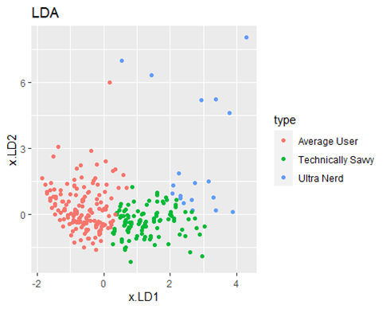

Are you tech savvy?
Background
In 2017 Mozilla sent out a survey asking how connected people felt. 189 770 people from 218 countries responded. One of the questions asked how technologically savvy you considered yourself. There were four response options Ultra nerd, technologically savvy, average user and Luddite. The survey asked a range of different questions about technology.
I looked at how New Zealanders self-identify their level of technical savvy. Do tech-savvy people in NZ know more than average users? Can we separate these groups? A proxy for how savvy you are is how much you know about tech and what tech you own. Do tech-savvy people know more than average users? Do Ultra nerds own more tech than an average user? I want to investigate whether there are actual differences between these groups of people. There were 20 explanatory variables in total coded as dummy variables.
Analysis
Analysis was done using R
The scaled PCA analysis indicated the use of 4 components. And the pairs plot showed no signs of structures
An LDA analysis was carried out using the score for the first four components from the PCA analysis.
This plot of LDA score (above) show the separation of the different groups. We can see the groups are quite well defined but only differ along the LD1 component. This component corresponds to what a person knows. The higher the LD1 score, the more they know about tech

This table of predictions show the model confused many of the Ultra Nerds with other lower groups. Overall the model did a fairly good job of predicting the groups
The classification error rates (above) indicate using 2 or 3 components isn't actually more useful than using 1 component
Conlusion
Are Ultra Nerds more savvy than others? Not really.
Are there actually different groups? Yes. There appears to be 2 distinct groups: Average users and Tech Savvy. Tech Savvy people know more about tech than average users but Ultra Nerds dont really know more than Tech Savvy people.